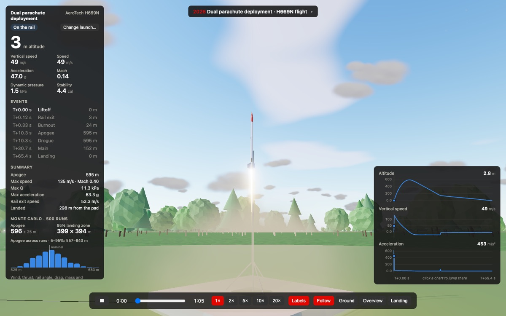

F1 + rocket telemetry in 3D
Telemetry Platform
Replays real Formula 1 races and rocket flights in 3D on one engine. Any F1 session from 2018 on loads with every car on track. The rocket side is a 6-DOF flight simulator I wrote, which lands within 1.5% of OpenRocket's apogee on four designs and draws Monte Carlo landing zones. Both can also stream live over UDP or WebSockets.